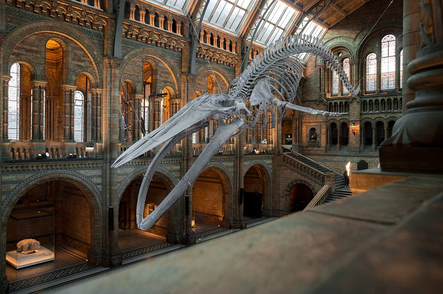

Cultura y su impacto
Los museos centros que recopilan un sin número de sucesos históricos con tintes políticos, sociales, geológicos, humanos, religiosos. Mostrando acontecimientos pasados de una manera didáctica a las generaciones futuras y permitiendo a las personas no olvidar la base del conocimiento o sucesos sobre la cual se asienta las nuevas generaciones.

Imagen tomada de: pixabay.com
Haz un recorrido Virtual a través del museo de tu prefencia!
Ir a un museo es una experiencia sin igual, que nos deja el espíritu perplejo al dejarnos contagiar por los hechos, los artefactos, lo antiguo o lo novedoso. De esta forma los museos se convierten en verdaderos centros de conocimiento y una oportunidad para aprender y valorar la historia o corregir los hechos que han desquebrajado a las culturas.